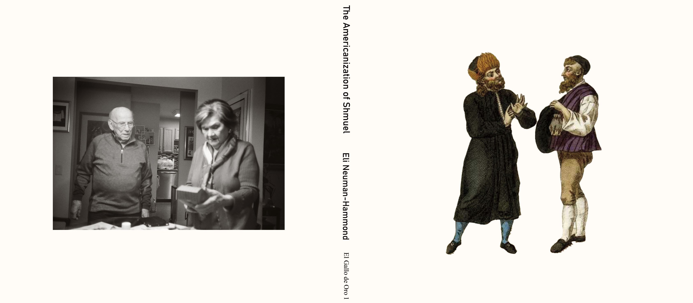

el Gallo de Oro ~~~ publisher of audio projects and books ~~~ family
run since 1963 ~~~ operating out of Providence, Rhode Island ~~~ el
Gallo de Oro ~~~ publisher of audio projects and books ~~~ family run
since 1963 ~~~ operating out of Providence, Rhode Island ~~~ el Gallo
de Oro ~~~ publisher of audio projects and books ~~~ family run since
1963 ~~~ operating out of Providence, Rhode Island ~~~
elgallo1: The Americanization of Shmuel

The Americanization of Shmuel - mp3 sample
A family sings and listens together, trying to remember
lullabies--lost, teetering on the edge of memory. An old man
recollects moments in his life from before and after World War II. The
wind ebbs and flows, shifting and eroding syllables. An artist plays
with time in his studio.
The Americanization of Shmuel is a historical sound work
trying to make small bits of meaning from the debris that the angel of
history leaves in its wake. It’s a polyphonic, multilingual map of
songs, places, movements, and assimilation, made in eighteen sections.
There are two parts which alternate and overlap. The first part is
noise. It’s sometimes wind, sometimes an inverted floor, at times the
tide, a valley, snow, sleep - and always a screen, which both masks
and becomes a surface of projection. The other part is made of
recorded fragments.
1. let’s listen
2. but a storm is blowing from paradise
3. emily (1)
4. I must have sung that every night for eight years
5. you were really in the mountains
6. and she had a beautiful voice, too
7. emily (2)
8. that’s the only picture I have of her and that’s exactly how i
remember it
9. san juan
10. but you remember. It's natural to forget.
11. emily (3)
12. when you were together, he said that, to you?
13. earth
14. emily (4)
15. I used to sing this song in the shower
16. ershter vi tragedye demolt vi fars
17. snow
18. doykayt